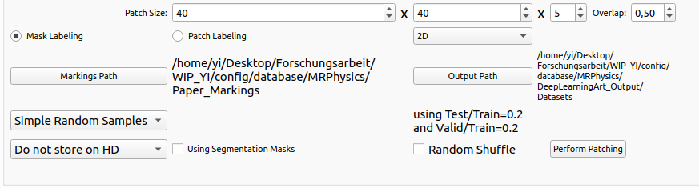

There are several options for generating datasets by patching. At first, you should set the Output Path correctly, where you want to save the datasets. Then, you can select 2D/3D patching with matching patch sizes to the neural network you want to train later on. If you select 2D patching, the third patch size will be ignored. And If you select the labeling mode as mask labeling or 2D patch labeling, you should also set a suitable overlap. Besides, you can select the methods of sample splitting mode, if you do not split datasets by yourself. There are three methods provided, simple random sample splitting, cross validation splitting and patient cross validation splitting. For simple random sample splitting, the training/validation/test datasets will be split by corresponding ratio, which you can set manually; For cross validation sample splitting, you can choose split ratio and number of folds; And it is similar for patient cross validation splitting. If you use the segmentation masks of datasets, please check Using Segmentation Mask. In the meanwhile, you need to set the exact Markings Path. And if you want to shuffle the datasets randomly, please check on Random Shuffle. The datasets will be not stored, if necessary, you can store the datasets in HDF5. Or if you use patch labeling, you can select patch based storage. After everything is prepared, you can perform patching by clicking Perform Patching.
Figure 3:
Perform Patching
|
 |